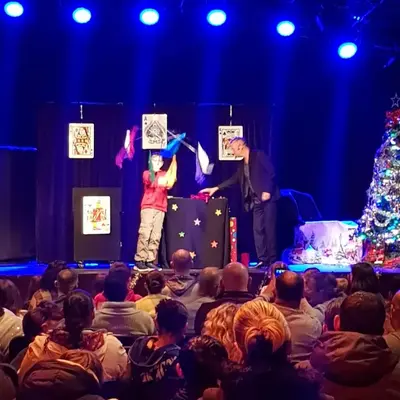
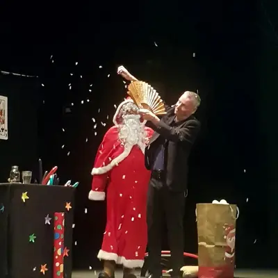
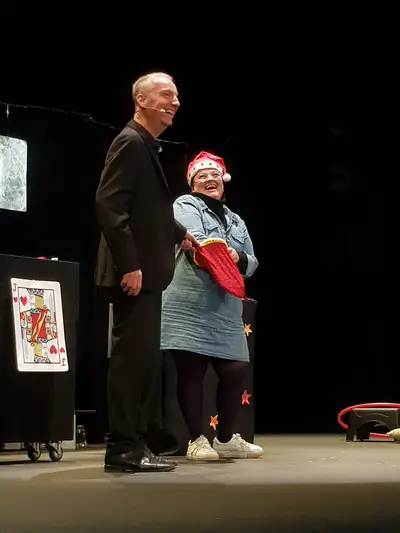
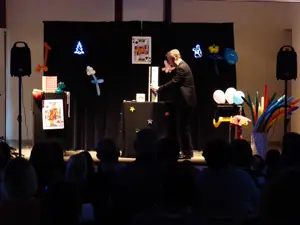
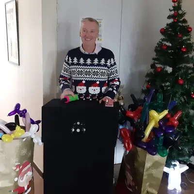

Un arbre de Noël clé en main
En brefDurée : environ 1 hEnfants de 3 à 12 ansEspace de 3 m × 2 m suffisantSonorisation incluse
Comités d'entreprise, écoles, mairies et associations font appel à Francis pour leur arbre de Noël. Son spectacle dure environ une heure et repose sur la participation : les enfants montent sur scène, aident le magicien et vivent les tours de l'intérieur.
Francis arrive avec son matériel et sa sonorisation, et s'installe dans votre salle des fêtes, salle polyvalente ou cantine. Le spectacle s'intègre au déroulé de votre fête, avant le goûter ou l'arrivée du Père Noël.
Pour aller plus loin
- Sculpture sur ballons après le spectacle : chaque enfant repart avec sa création
- Magie de proximité pour les parents pendant le goûter ou le verre de l'amitié
- Un même spectacle pour plusieurs groupes ou plusieurs séances dans la journée
Les dates de décembre partent vite : pour un arbre de Noël, pensez à réserver dès octobre ou novembre.
Ils ont fait confiance à Francis
Francis Darcy a animé des événements pour Safran, la RATP, Carrefour, La Poste, la CPAM, Zodiac Aerospace, E.Leclerc, Kiabi, la Ville d'Issoudun et la Ville de Déols, parmi d'autres entreprises et collectivités. Il se déplace à Issoudun, Châteauroux, Bourges, Vierzon et dans tout le Centre-Val de Loire (zone d'intervention).
« La famille, les amis et une jolie touche de magie (et d'humour) tout au long de la soirée. Sculptures de ballons pour les enfants, close-up pendant le repas et petit spectacle qui a conquis petits et grands. Un immense merci ! »
— Avis Google
Questions fréquentes sur l'arbre de Noël
Combien de temps dure le spectacle ?
Environ une heure. Le format peut être raccourci pour s'adapter au programme de votre fête.
Pour quel âge ?
Le spectacle est conçu pour les enfants de 3 à 12 ans. Les parents présents dans la salle se prennent au jeu eux aussi.
Que faut-il prévoir dans la salle ?
Un espace d'environ 3 m × 2 m pour le magicien, avec les enfants assis devant. Francis apporte sa sonorisation et son matériel.
Comment obtenir un devis ?
Appelez Francis au 06 72 11 82 29 ou écrivez-lui depuis le formulaire de contact en indiquant la date, le lieu et le nombre d'enfants. Il vous répond personnellement avec un devis gratuit sous 24 heures.
Spectacles de Noël en images
Cliquez sur une photo pour l'agrandir.






Autres prestations
Votre arbre de Noël approche ?
Parlez-en à Francis : il vous répond personnellement et établit un devis gratuit sous 24 heures.
Issoudun · Châteauroux · Bourges · Vierzon · Centre-Val de Loire